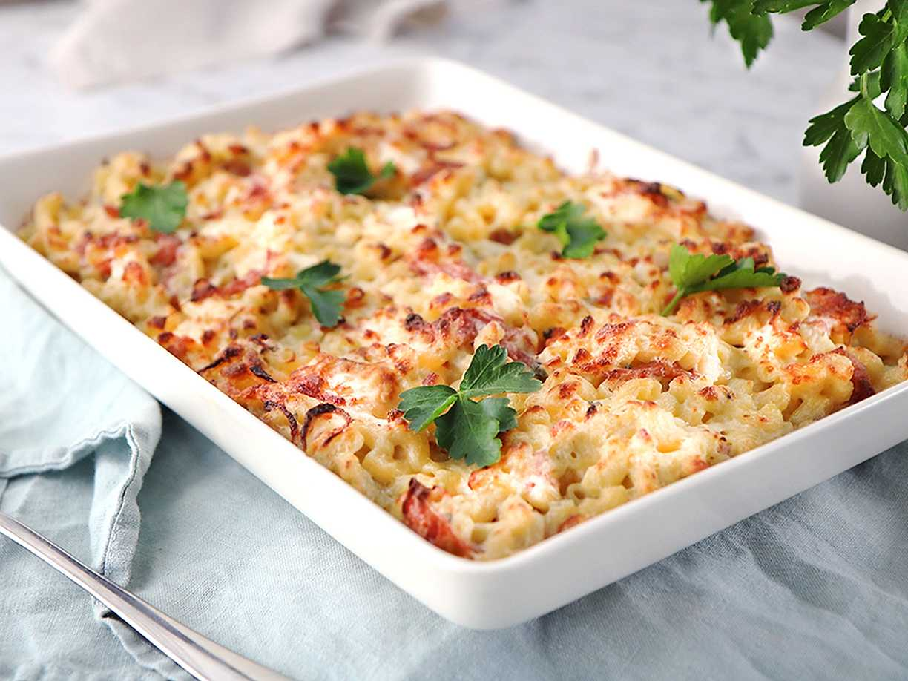

Pastagratäng med köttfärsås
Ingredienser
Gör såhär
Svårighetsgrad: Lätt
Sammy Ringström
Sätt ugnen på 225°C.
Skala och skiva löken. Fräs den och färsen i oljan i en gryta. Pressa i vitlöken och blanda ner rosmarin,
tomatkross, vatten, smulad buljongtärning och chilisås. Låt sjuda ca 5 minuter. Krydda med salt och peppar.
Häll pastan i en ugnsform och häll över köttfärssåsen. Strö över osten.
500 g krossade tomater
Grädda mitt i ugnen ca 10 minuter.
Skär salladen fint och servera till gratängen.
4 port pasta
1 gul lök
ca 500 g blandfärs
500 g krossade tomater
1 grönsaksbuljongtärning
150 g riven ost